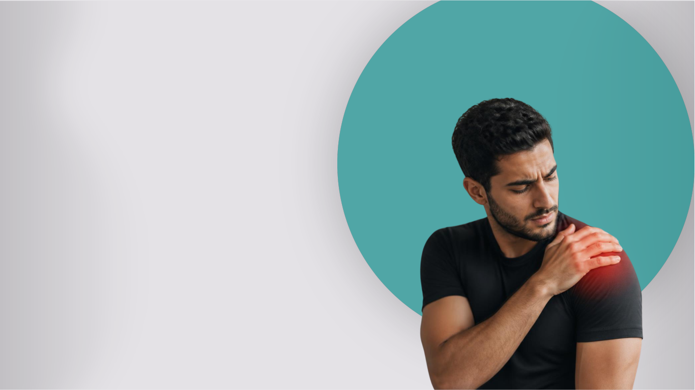

O Vitallis nasceu para tornar a reabilitação mais acessível, você inicia sua recuperação quando e onde quiser. A plataforma oferece exercícios personalizados, acompanhamento da evolução e orientações para que você possa voltar às suas atividades com mais segurança, autonomia e qualidade de vida, sem depender da disponibilidade de terceiros.
O Vitallis é uma plataforma digital de apoio à reabilitação e fisioterapia, feita para quem não tem tempo ou condições de manter acompanhamento profissional frequente. Com o Vitallis, você pode acessar exercícios personalizados, acompanhar sua evolução e receber orientações para que possa voltar às suas atividades com mais segurança, autonomia e qualidade de vida.